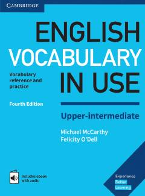

EVIngliz tili so'z boyligini o'rta-yuqori darajada oshirish uchun amaliy qo'llanma.
Ushbu kitob o'rta-yuqori bosqichdagi o'quvchilar uchun ingliz tili leksikasini boyitish va mustahkamlashga mo'ljallangan. Unda turli mavzular, so'z yasalishi, iboralar va kundalik muloqotda kerak bo'ladigan so'z boyligi amaliy mashqlar yordamida tushuntirilgan.